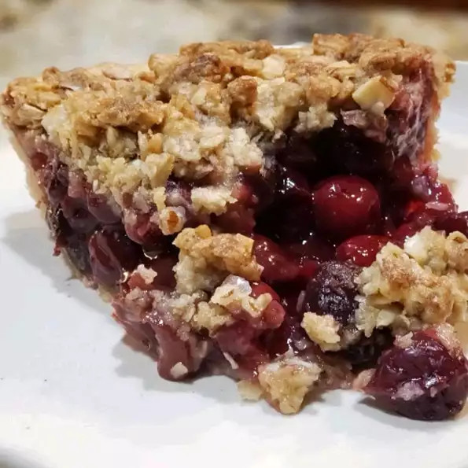

Cherry Pie

Description
This delicious and super easy cherry pie features a crunchy, streusel-like topping.
Ingredients
- 11 (9 inch) unbaked pie crust
- 1/2 cup slivered almonds
- 1/2 cup light brown sugar
- 1/3 cup rolled oats
- 3/4 teaspoon salt
- 6 tablespoons cold, unsalted butter, cut into pieces
- 2 pounds cherries, pitted
- 1/2 lemon, juiced
- 1/3 cup white sugar, or more to taste
- 1/4 cup cornstarch
Steps
- Preheat oven to 350 degrees F (175 degrees C). Line a baking sheet with aluminum foil.
- Roll out pie crust and lay into a 9-inch pie pan.
- Combine almonds, brown sugar, oats, flour, and salt in a large bowl. Work butter into the almond mixture with your fingers, breaking up any large pieces, until incorporated completely. Cover and chill for 15 minutes.
- Combine cherries, lemon juice, white sugar, and cornstarch. Stir until well coated and no dry lumps remain, 3 to 4 minutes.
- Pour cherries and any accumulated juices into the prepared pie pan. Press down into the pan. Crumble oat mixture over the top. Place the pan on the prepared baking sheet.
- Bake in the preheated oven until cherries are bubbling and the crust and crumble topping are browned, about 1 hour 15 minutes. Let cool completely.
To the top
Back